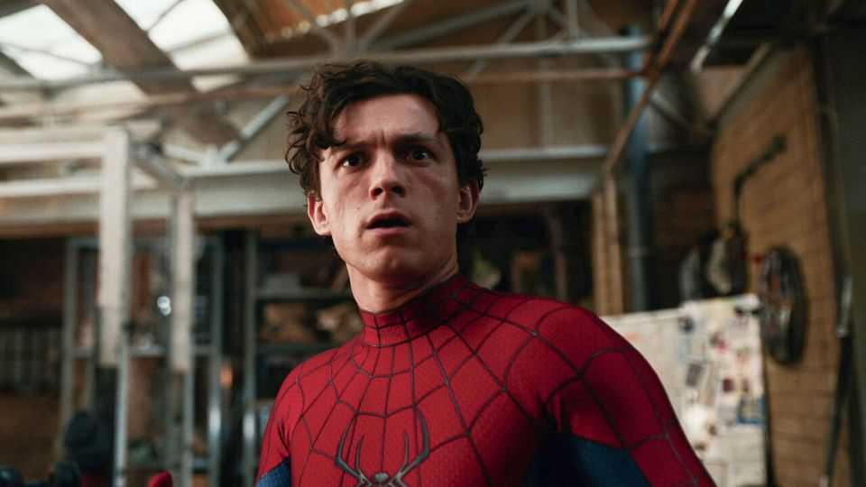
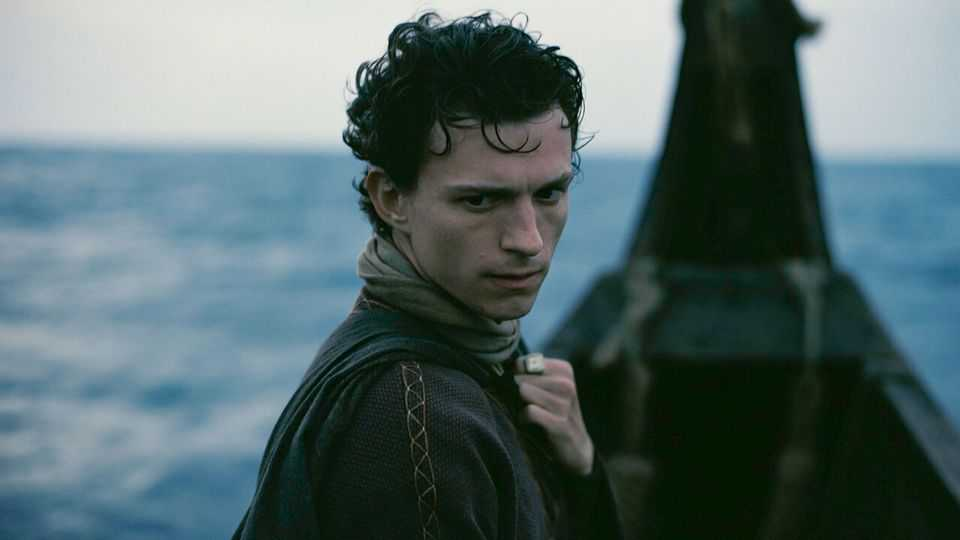

How Tom Holland became the world’s highest-grossing young actor
Lessons from his prodigious early success

Jul 30th 2026
MOST ACTORS are lucky if they ever get to star in a summer blockbuster. This year Tom Holland is in two: “The Odyssey”, in which he plays Telemachus, the hero’s son; and “Spider-Man: Brand New Day”, the seventh feature film in which he plays the Web-Slinger.
It is rare to find a Hollywood actor that bankable. It is rarer still to find one as young as Mr Holland, whose films have grossed almost $12bn: more than those of any other actor aged 30 or under. What lessons can aspiring actors learn from his early success? There are four.
First, start young—ideally really young. Mr Holland, who is British, made his debut in the West End when he was 12 and soon had a leading role. His first live-action film, “The Impossible”, came out when he was 16. Since then, he has appeared in at least one film a year, on average.

Second, get out of worthy little indie films and into a blockbuster franchise as soon as possible. Mr Holland was just 19 when he made his first appearance as Spider-Man in “Captain America: Civil War”. (He looked much younger: Tony Stark, another character, refers to him as “Spider-Boy” and his costume as “a onesie”.)
Tobey Maguire and Andrew Garfield, Mr Holland’s predecessors as Spider-Man, were 26 and 29 when they first donned the red-and-blue suit. They managed only a handful of films, whereas Mr Holland’s youthfulness has prolonged his tenure and put him in the phenomenally high-grossing Avengers films in addition to the main Spider-Man ones.
Third, if your goal is money rather than awards, it is better to be boring and reliable than interesting and potentially great. Mr Holland’s second-closest rival is Timothée Chalamet. His films, including the “Dune” franchise, may have grossed less—$3.2bn—but his reputation as a thespian is far greater. Mr Chalamet, who is known for his slouchy intensity, has received three acting Oscar nominations to Mr Holland’s zero. The reliable, steady Mr Holland, by contrast, is at no risk of scene-stealing. He is an Everyman. His blandness is easier clay for directors to mould.
Mr Holland’s closest rival is Zendaya, whose films have grossed $6bn to date. She is his co-star in “The Odyssey” and the Spider-Man series; she is also his wife. Therein lies the last lesson, and one relevant to non-actors, too: marry well. ■